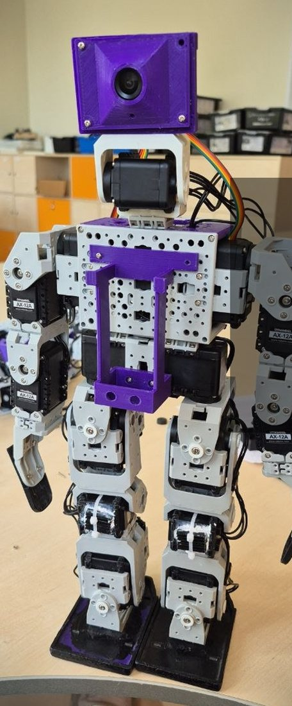

Bioloid играет в футбол
Робот ROBOTIS Bioloid, переделанный под робофутбол: камера, гироскоп, своя прошивка. Здесь всё, что я узнал по ходу работы.
3 место на РобоФинисте 2026 (футбол 2 на 2, гуманоиды). Сейчас готовлюсь к RoboCup.
Bioloid plays soccer
A ROBOTIS Bioloid humanoid rebuilt for robot soccer: camera, gyro, custom firmware. Here is everything I learned along the way.
3rd place at RoboFinist 2026 (2 vs 2 humanoid soccer). Now preparing for RoboCup.
ОбъяснялкиGuides
Обратная связьFeedback
Есть вопрос по Bioloid, нашёл ошибку на сайте или хочешь поделиться своим опытом? Нажми кнопку и заполни короткую форму. Нужен аккаунт GitHub (бесплатный). Вопрос и ответ увидят все, так что они помогут и другим.
Got a Bioloid question, found a mistake, or want to share your experience? Click a button and fill in a short form. You need a (free) GitHub account. Questions and answers are public, so they help others too.
Без GitHub можно написать в комментариях на YouTube или Instagram.
No GitHub? Comment on YouTube or Instagram.
Для кого это. Для тех, у кого есть Bioloid (Premium, GP или похожий на CM-530) и кто упёрся в то, что в RoboPlus не всё работает как написано. Если начинаешь с нуля, иди по порядку: Task → Motion → камеры → гиро.
Who this is for. Anyone with a Bioloid (Premium, GP or anything on a CM-530) who found that RoboPlus doesn't always work as documented. Starting from zero? Go in order: Task → Motion → cameras → gyro.